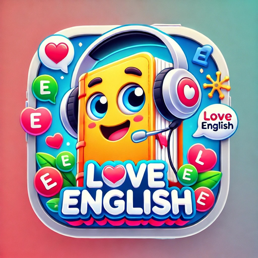
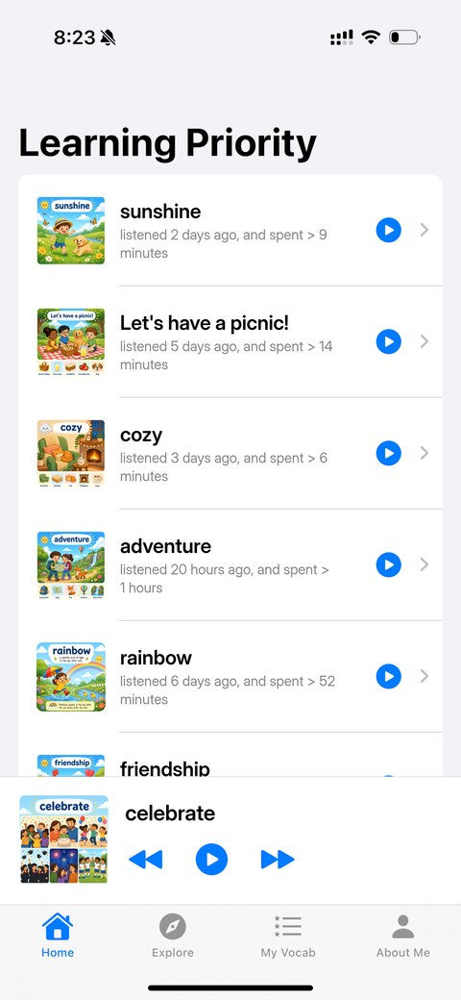
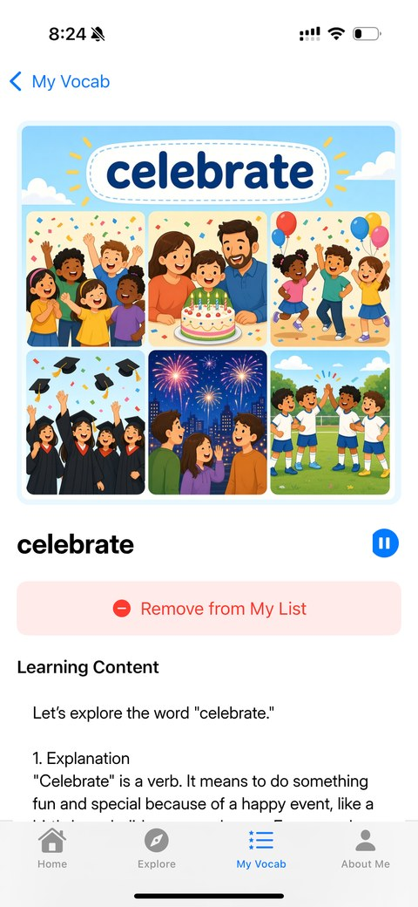
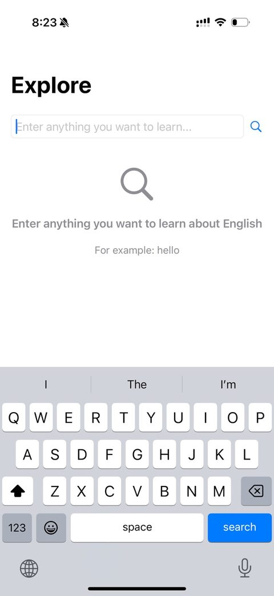
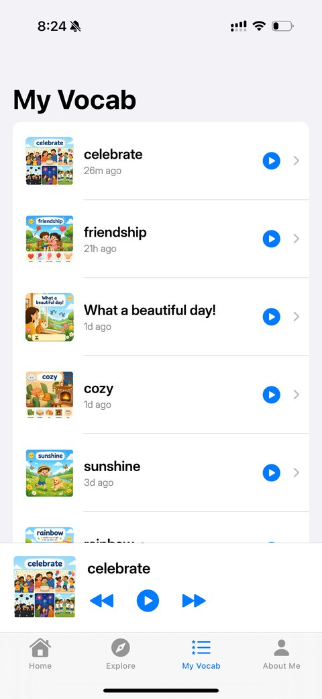

Look up anything
Type a word or phrase you want to learn. Hula explains it in the language you are learning, with similar words to explore next.

hula.ai · AI vocabulary app
Look up any word or phrase you want to learn. Hula writes a short lesson for it, draws a picture and reads it aloud. Then it plays your words back every day, so you learn by listening, the way you learned your first language.
Free on iPhone and iPad. Pick your language:


Real numbers from Hula, as of November 2, 2026. Sources are listed under Hula by the numbers.
How it works
Hula is built on one idea: repetition is the mother of learning. Instead of drilling grammar, it turns the words you care about into short lessons you can listen to again and again.
Type a word or phrase you want to learn. Hula explains it in the language you are learning, with similar words to explore next.
Every word gets an AI-made picture and a spoken lesson, in a quick 10-second version and a full version.
Hula ranks your saved words by what you need to hear again, based on your listening history.
Lessons play one after another, in the background and from the lock screen, so you can learn while driving or walking.
Save words to your list and star the ones you want to hear most often.
Use Hula in the browser at hula.ai or in the iPhone and iPad apps, signed in to the same account.
Languages
Hula started with English. The same app now teaches Mandarin, Cantonese and Spanish on the App Store, and Arabic on the web. Each language has its own site and its own word list.
The original Hula app. Look up any word or phrase and get an English lesson with a picture and audio.
The same listening-first method for Mandarin, with lessons spoken in Mandarin.
Everyday Cantonese words and phrases, explained and spoken in Cantonese.
Learn Spanish the natural way, with pictures, audio and real context.
An early web preview. Arabic has no iOS app yet.
A look inside


Hula by the numbers
Lessons, pictures and audio are made when a word is looked up, so these numbers keep growing. Counted on November 2, 2026.
| Language · site | AI lessons | Pictures | Audio clips |
|---|---|---|---|
| English · www.hula.ai | 1,041 | 1,072 | 2,511 |
| Mandarin · nihao.hula.ai | 5,349 | 5,627 | 12,863 |
| Spanish · hola.hula.ai | 270 | 275 | 598 |
| Cantonese · neihou.hula.ai | 69 | 72 | 187 |
| Arabic · marhaban.hula.ai | 3 | 3 | 6 |
| Total | 6,732 | 7,049 | 16,165 |
Every Hula app is free on the App Store for iPhone and iPad: English, Mandarin, Cantonese and Spanish. Arabic is on the web.